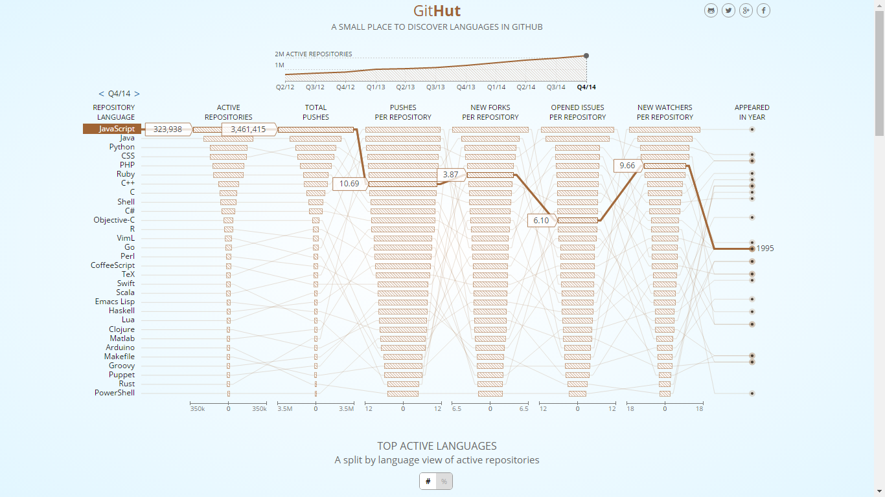

Quelques chiffres tirés de github

Le typage
let i: number = 0; //statique
i = "0"; // warning lancé par Typescript
var data: any; // dynamique
var data; // TS valide
TypeScript code
// some typescript
class MyClass {
public static myValue: string;
constructor(init: string) {
this.myValue = init;
}
}
import fs = require("fs");
module MyModule {
export interface MyInterface extends Other {
myProperty: any;
}
}
declare magicNumber number;
myArray.forEach(() => { }); // lambda function
Merci de votre attention !